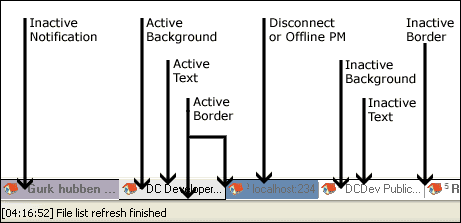

Tabs
Boolean Options
- make tabs bold on status messages in hubs
-
If enabled the tab will be set to "dirty" if a status message arrives. This
means that the tab will slightly change color or the text will be bolded
depending on the blend setting.
- Show icons in tabs
-
If enabled an icon is displayed in the tab to make it easier to locate different
window types.
Size of string to display in tabs
This setting determines how many characters should be displayed in the tab.
Tab Colors

Choose an option from the dropdown menu and press select color to change color.
Blending
If this option is enabled the text will not be bolded when the status changes, instead the background
color will change by a certain amount specified. Value is in the range of 0-100.